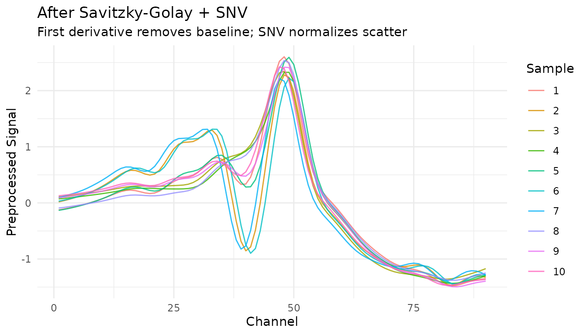

Introduction
The measure package extends tidymodels with preprocessing steps designed specifically for analytical measurement data. If you work with spectroscopy, chromatography, or other instrument-generated signals, measure provides familiar recipes-style preprocessing that integrates seamlessly with the tidymodels ecosystem.
Why measure?
Analytical data has unique preprocessing requirements:
- Multi-dimensional signals: Each sample produces many measurements (e.g., absorbance at hundreds of wavelengths)
- Specialized transformations: Techniques like Savitzky-Golay derivatives and scatter correction are standard practice
- Format flexibility: Data may arrive in wide format (one column per wavelength) or long format (one row per measurement)
measure handles all of this while keeping the intuitive recipes interface you already know. ## The measure workflow
The typical measure workflow has three phases:
- Input step: Convert your data to measure’s internal format
- Processing steps: Apply spectral preprocessing (smoothing, derivatives, normalization)
- Output step: Convert back to a format suitable for modeling
Let’s see this in action with real data.
Example: NIR spectroscopy of meat samples
We’ll use the meats_long dataset included in measure.
This contains NIR (Near-Infrared) transmittance spectra of meat samples,
with the goal of predicting water, fat, and protein content.
data(meats_long)
# Each sample has 100 spectral channels
meats_long
#> # A tibble: 21,500 × 6
#> id water fat protein channel transmittance
#> <int> <dbl> <dbl> <dbl> <int> <dbl>
#> 1 1 60.5 22.5 16.7 1 2.62
#> 2 1 60.5 22.5 16.7 2 2.62
#> 3 1 60.5 22.5 16.7 3 2.62
#> 4 1 60.5 22.5 16.7 4 2.62
#> 5 1 60.5 22.5 16.7 5 2.62
#> 6 1 60.5 22.5 16.7 6 2.62
#> 7 1 60.5 22.5 16.7 7 2.62
#> 8 1 60.5 22.5 16.7 8 2.62
#> 9 1 60.5 22.5 16.7 9 2.63
#> 10 1 60.5 22.5 16.7 10 2.63
#> # ℹ 21,490 more rowsThe data is in “long” format where each row represents one measurement at one channel for one sample. Let’s visualize a few spectra:
meats_long |>
filter(id <= 10) |>
ggplot(aes(x = channel, y = transmittance, group = id, color = factor(id))) +
geom_line(alpha = 0.8) +
labs(
x = "Channel",
y = "Transmittance",
title = "Raw NIR Spectra",
color = "Sample ID"
) +
theme_minimal()
Creating a recipe
We start by creating a recipe that specifies the outcome variables and predictors:
rec <- recipe(water + fat + protein ~ ., data = meats_long) |>
# Mark 'id' as an identifier, not a predictor
update_role(id, new_role = "id")
rec
#>
#> ── Recipe ──────────────────────────────────────────────────────────────────────
#>
#> ── Inputs
#> Number of variables by role
#> outcome: 3
#> predictor: 2
#> id: 1Step 1: Input the measurements
Since our data is in long format, we use
step_measure_input_long(). This converts the
transmittance values (indexed by channel) into
measure’s internal format:
rec <- rec |>
step_measure_input_long(transmittance, location = vars(channel))
rec
#>
#> ── Recipe ──────────────────────────────────────────────────────────────────────
#>
#> ── Inputs
#> Number of variables by role
#> outcome: 3
#> predictor: 2
#> id: 1
#>
#> ── Operations
#> • Collate long analytical measurements: transmittanceAfter prepping and baking, you’ll see that the original
transmittance and channel columns are replaced
by a .measures column containing nested tibbles:
rec_prepped <- prep(rec)
internal_format <- bake(rec_prepped, new_data = NULL)
# The data now has a .measures list-column
internal_format
#> # A tibble: 215 × 6
#> id water fat protein .measures channel
#> <int> <dbl> <dbl> <dbl> <meas> <list>
#> 1 1 60.5 22.5 16.7 [100 × 2] <int [100]>
#> 2 2 46 40.1 13.5 [100 × 2] <int [100]>
#> 3 3 71 8.4 20.5 [100 × 2] <int [100]>
#> 4 4 72.8 5.9 20.7 [100 × 2] <int [100]>
#> 5 5 58.3 25.5 15.5 [100 × 2] <int [100]>
#> 6 6 44 42.7 13.7 [100 × 2] <int [100]>
#> 7 7 44 42.7 13.7 [100 × 2] <int [100]>
#> 8 8 69.3 10.6 19.3 [100 × 2] <int [100]>
#> 9 9 61.4 19.9 17.7 [100 × 2] <int [100]>
#> 10 10 61.4 19.9 17.7 [100 × 2] <int [100]>
#> # ℹ 205 more rows
# Each element contains location and value
internal_format$.measures[[1]]
#> <measure_tbl [100 x 2]>
#> # A tibble: 100 × 2
#> location value
#> <int> <dbl>
#> 1 1 2.62
#> 2 2 2.62
#> 3 3 2.62
#> 4 4 2.62
#> 5 5 2.62
#> 6 6 2.62
#> 7 7 2.62
#> 8 8 2.62
#> 9 9 2.63
#> 10 10 2.63
#> # ℹ 90 more rowsStep 2: Apply preprocessing
Now we can add spectral preprocessing steps. These operate on the
internal .measures column:
rec <- recipe(water + fat + protein ~ ., data = meats_long) |>
update_role(id, new_role = "id") |>
step_measure_input_long(transmittance, location = vars(channel)) |>
# Savitzky-Golay first derivative for baseline removal
step_measure_savitzky_golay(
window_side = 5,
differentiation_order = 1
) |>
# Standard Normal Variate for scatter correction
step_measure_snv()
rec
#>
#> ── Recipe ──────────────────────────────────────────────────────────────────────
#>
#> ── Inputs
#> Number of variables by role
#> outcome: 3
#> predictor: 2
#> id: 1
#>
#> ── Operations
#> • Collate long analytical measurements: transmittance
#> Savitzky-Golay preprocessing on
#> SNV transformation onmeasure provides many built-in preprocessing steps:
-
Filtering:
step_measure_savitzky_golay()for smoothing and derivatives -
Scatter correction:
step_measure_snv(),step_measure_msc() -
Sample-wise normalization:
step_measure_normalize_sum(),step_measure_normalize_max(),step_measure_normalize_peak(), and more -
Variable-wise scaling:
step_measure_center(),step_measure_scale_auto(),step_measure_scale_pareto(), and more -
Custom transformations:
step_measure_map()for when built-in steps don’t cover your needs
See vignette("preprocessing") for details on all
available options.
Let’s see how this transforms our spectra:
processed <- bake(prep(rec), new_data = NULL)
# Unnest for plotting
plot_data <- processed |>
filter(row_number() <= 10) |>
mutate(sample_id = row_number()) |>
unnest(.measures)
ggplot(plot_data, aes(x = location, y = value, group = sample_id, color = factor(sample_id))) +
geom_line(alpha = 0.8) +
labs(
x = "Channel",
y = "Preprocessed Signal",
title = "After Savitzky-Golay + SNV",
subtitle = "First derivative removes baseline; SNV normalizes scatter",
color = "Sample"
) +
theme_minimal()
Step 3: Output for modeling
For most modeling workflows, you’ll want data in wide format (one column per spectral feature):
rec_full <- recipe(water + fat + protein ~ ., data = meats_long) |>
update_role(id, new_role = "id") |>
step_measure_input_long(transmittance, location = vars(channel)) |>
step_measure_savitzky_golay(window_side = 5, differentiation_order = 1) |>
step_measure_snv() |>
step_measure_output_wide(prefix = "nir_")
modeling_data <- bake(prep(rec_full), new_data = NULL)
#> Dropping 1 list column for wide output: channel
# Ready for modeling!
modeling_data[1:5, 1:10]
#> # A tibble: 5 × 10
#> id water fat protein nir_01 nir_02 nir_03 nir_04 nir_05 nir_06
#> <int> <dbl> <dbl> <dbl> <dbl> <dbl> <dbl> <dbl> <dbl> <dbl>
#> 1 1 60.5 22.5 16.7 -0.126 -0.110 -0.0928 -0.0745 -0.0553 -0.0346
#> 2 2 46 40.1 13.5 0.0184 0.0381 0.0601 0.0841 0.110 0.137
#> 3 3 71 8.4 20.5 0.105 0.114 0.125 0.136 0.148 0.159
#> 4 4 72.8 5.9 20.7 0.0716 0.0786 0.0871 0.0974 0.108 0.119
#> 5 5 58.3 25.5 15.5 -0.132 -0.118 -0.101 -0.0817 -0.0608 -0.0385Working with wide-format data
If your data starts in wide format (measurements as columns), use
step_measure_input_wide() instead. Here’s an example using
data from modeldata:
library(modeldata)
data(meats)
# This data has x_001, x_002, ... columns for spectral channels
head(meats[, 1:8])
#> # A tibble: 6 × 8
#> x_001 x_002 x_003 x_004 x_005 x_006 x_007 x_008
#> <dbl> <dbl> <dbl> <dbl> <dbl> <dbl> <dbl> <dbl>
#> 1 2.62 2.62 2.62 2.62 2.62 2.62 2.62 2.62
#> 2 2.83 2.84 2.84 2.85 2.85 2.86 2.86 2.87
#> 3 2.58 2.58 2.59 2.59 2.59 2.59 2.59 2.60
#> 4 2.82 2.82 2.83 2.83 2.83 2.83 2.83 2.84
#> 5 2.79 2.79 2.79 2.79 2.80 2.80 2.80 2.80
#> 6 3.01 3.02 3.02 3.03 3.03 3.04 3.04 3.05
# Create location values (optional - defaults to 1, 2, 3, ...)
wavelengths <- seq(850, 1050, length.out = 100)
rec_wide <- recipe(water + fat + protein ~ ., data = meats) |>
step_measure_input_wide(
starts_with("x_"),
location_values = wavelengths
) |>
step_measure_snv() |>
step_measure_output_wide(prefix = "spec_")
bake(prep(rec_wide), new_data = NULL)[1:5, 1:8]
#> Warning: Values from `value` are not uniquely identified; output will contain list-cols.
#> • Use `values_fn = list` to suppress this warning.
#> • Use `values_fn = {summary_fun}` to summarise duplicates.
#> • Use the following dplyr code to identify duplicates.
#> {data} |>
#> dplyr::summarise(n = dplyr::n(), .by = c(water, fat, protein, location)) |>
#> dplyr::filter(n > 1L)
#> # A tibble: 5 × 8
#> water fat protein spec_0850.0000 spec_0852.0202 spec_0854.0404
#> <dbl> <dbl> <dbl> <list> <list> <list>
#> 1 60.5 22.5 16.7 <dbl [1]> <dbl [1]> <dbl [1]>
#> 2 46 40.1 13.5 <dbl [1]> <dbl [1]> <dbl [1]>
#> 3 71 8.4 20.5 <dbl [1]> <dbl [1]> <dbl [1]>
#> 4 72.8 5.9 20.7 <dbl [2]> <dbl [2]> <dbl [2]>
#> 5 58.3 25.5 15.5 <dbl [2]> <dbl [2]> <dbl [2]>
#> # ℹ 2 more variables: spec_0856.0606 <list>, spec_0858.0808 <list>Applying recipes to new data
Like any recipe, you prep once on training data, then bake on new data:
# Split the data
set.seed(123)
train_idx <- sample(nrow(meats), 180)
train_data <- meats[train_idx, ]
test_data <- meats[-train_idx, ]
# Prep on training data
rec <- recipe(water + fat + protein ~ ., data = train_data) |>
step_measure_input_wide(starts_with("x_")) |>
step_measure_savitzky_golay(window_side = 7, differentiation_order = 1) |>
step_measure_snv() |>
step_measure_output_wide(prefix = "nir_")
rec_prepped <- prep(rec, training = train_data)
#> Warning: Values from `value` are not uniquely identified; output will contain list-cols.
#> • Use `values_fn = list` to suppress this warning.
#> • Use `values_fn = {summary_fun}` to summarise duplicates.
#> • Use the following dplyr code to identify duplicates.
#> {data} |>
#> dplyr::summarise(n = dplyr::n(), .by = c(water, fat, protein, location)) |>
#> dplyr::filter(n > 1L)
# Bake on both
train_processed <- bake(rec_prepped, new_data = NULL)
test_processed <- bake(rec_prepped, new_data = test_data)
#> Warning: Values from `value` are not uniquely identified; output will contain list-cols.
#> • Use `values_fn = list` to suppress this warning.
#> • Use `values_fn = {summary_fun}` to summarise duplicates.
#> • Use the following dplyr code to identify duplicates.
#> {data} |>
#> dplyr::summarise(n = dplyr::n(), .by = c(water, fat, protein, location)) |>
#> dplyr::filter(n > 1L)
cat("Training samples:", nrow(train_processed), "\n")
#> Training samples: 153
cat("Test samples:", nrow(test_processed), "\n")
#> Test samples: 32Integration with tidymodels
measure recipes work seamlessly with the broader tidymodels
ecosystem. See vignette("recipes") for complete examples
including:
- Bundling preprocessing with models using workflows
- Cross-validation with measure recipes
- Hyperparameter tuning for preprocessing steps
- Comparing preprocessing strategies
Finding test data
Included datasets
The measure package includes several datasets for testing and examples:
# NIR spectroscopy
data(meats_long)
# 215 meat samples, long format
# Raman spectroscopy
data(glucose_bioreactors)
# Loads bioreactors_small (210) and bioreactors_large (42)
# Chromatography
data(hplc_chromatograms)
# 20 simulated HPLC samples
data(sec_chromatograms)
# 10 SEC samples (5 standards + 5 polymers)
data(sec_calibration)
# MW calibration standards
# Mass spectrometry
data(maldi_spectra)
# 16 simulated MALDI-TOF spectraExternal data sources
For additional test data, several R packages provide spectral datasets:
# modeldata - meats dataset in wide format
library(modeldata)
data(meats)
dim(meats)
#> [1] 215 103
# prospectr - NIR soil spectroscopy
data(NIRsoil, package = "prospectr")
dim(NIRsoil)
#> [1] 825 5Online repositories with public analytical data:
- Mendeley Data - Search for spectroscopy/chromatography datasets
- Zenodo - Open science data repository
- NIST Chemistry WebBook - Reference IR, MS, UV-Vis spectra
- MassBank - Mass spectrometry database
- HMDB - Human Metabolome Database (NMR, MS)
Next steps
- See
vignette("preprocessing")for a detailed guide to each preprocessing technique, including:- Savitzky-Golay smoothing and derivatives
- SNV and MSC scatter correction
- Sample-wise normalization (sum, max, range, peak region)
- Variable-wise scaling (centering, auto-scaling, Pareto scaling)
- Explore hyperparameter tuning with
tune- Savitzky-Golay and peak normalization steps are tunable! - Check out the function reference for all available steps